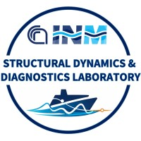

Variable-Stiffness Ship Elastic Models for Hydroelastic Digital Twinning
10th International Conference on Hydroelasticity in Marine Technology, May 2026.

LabSDDStructural Dynamics and Diagnostics Laboratory
CNR-INM · Institute of Marine Engineering
Selected publications and resources from LabSDD on structural dynamics, diagnostics, structural health monitoring, virtual sensing, hydroelasticity, uncertainty analysis, and damage identification.
The selected works are connected to experimental and numerical research activities on marine and mechanical structures, with emphasis on vibration-based diagnostics, model validation, digital-twin-oriented monitoring, and data-driven decision support.
A compact selection of recent and representative works connected to the laboratory research activities.
Variable-Stiffness Ship Elastic Models for Hydroelastic Digital Twinning
10th International Conference on Hydroelasticity in Marine Technology, May 2026.
Analysis and mitigation of uncertainties in damage identification by modal-curvature based methods
Journal of Sound and Vibration, 596, 118769, 2025.
Continuous Mapping of Deformation Over a Ship Structure Model Based on Pointwise Measurements
Proceedings of the 11th European Workshop on Structural Health Monitoring, 2024.
Robustness vs. effectiveness of transfer learning in damage identification depending on feature selection
11th International Operational Modal Analysis Conference, May 2025.
The list below is organized by research topic to support conference presentations, poster discussions, and follow-up reading.
Variable-Stiffness Ship Elastic Models for Hydroelastic Digital Twinning
10th International Conference on Hydroelasticity in Marine Technology, May 2026.
Continuous Mapping of Deformation Over a Ship Structure Model Based on Pointwise Measurements
Proceedings of the 11th European Workshop on Structural Health Monitoring, 2024.
Mechanical systems virtual sensing by proportional observer and multi resolution analysis
Mechanical Systems and Signal Processing, 2021.
Analysis and mitigation of uncertainties in damage identification by modal-curvature based methods
Journal of Sound and Vibration, 596, 118769, 2025.
Damage identification on a flat panel based on combined modal curvature indices
Innovations in the Analysis and Design of Marine Structures, pp. 349–355, CRC Press, 2025.
Use of ensemble learning in damage identification based on curvature analysis
11th International Operational Modal Analysis Conference, May 2025.
Hybrid Uncertainty Analysis of Damage Indexes Based on Modal Strain Energy
International Operational Modal Analysis Conference, pp. 561–572, Springer Nature Switzerland, May 2024.
Damage identification techniques via modal curvature analysis: Overview and comparison
Mechanical Systems and Signal Processing, 2015.
Robustness vs. effectiveness of transfer learning in damage identification depending on feature selection
11th International Operational Modal Analysis Conference, May 2025.
A Hybrid Approach for Damage Detection and Localization on a Plate-Like Structure
Proceedings of the 11th European Workshop on Structural Health Monitoring, 2024.
The research outputs listed on this page are connected to broader activities on structural dynamics, diagnostics, digital-twin-oriented monitoring, marine structures, experimental testing, and uncertainty-aware damage identification.
This section can be expanded with official project names, funding information, grant numbers, partner logos, or links to public project pages.
Structural Dynamics and Diagnostics Laboratory - LabSDD
CNR-INM · Institute of Marine Engineering
National Research Council of Italy
Contact details can be added here, for example a group email, the laboratory coordinator, or the reference authors for the presentation/poster.